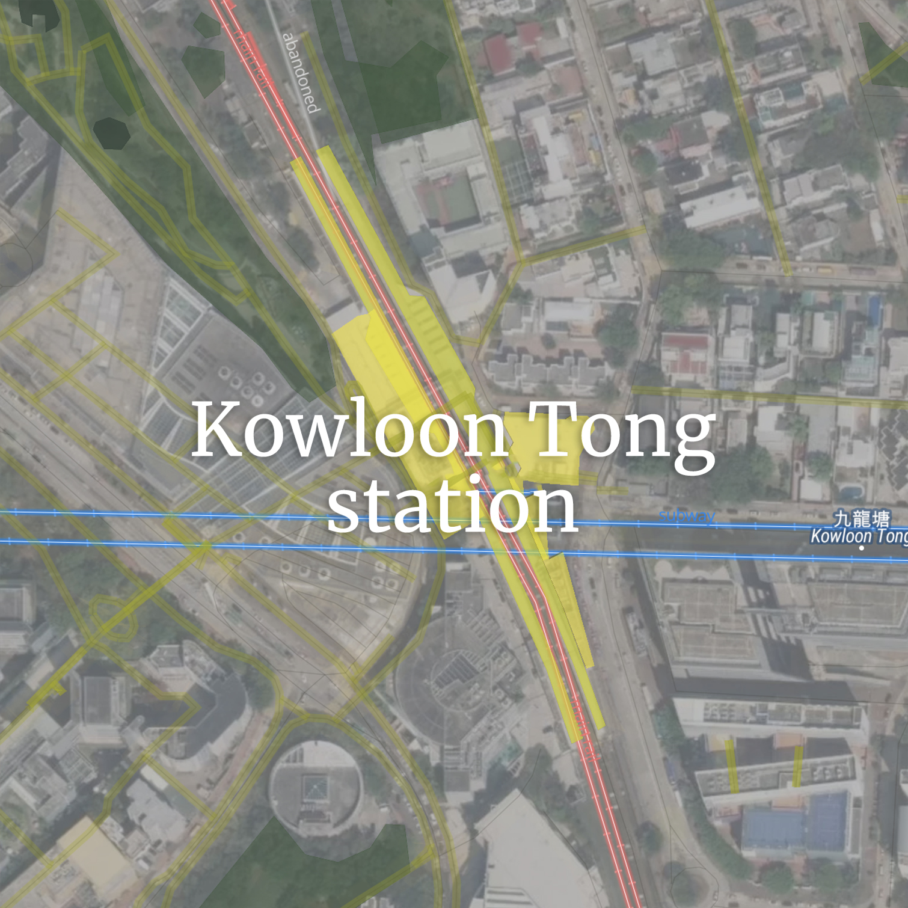
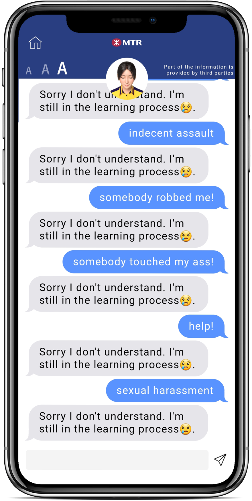

“If a woman says she likes sex, does that mean she likes being raped?” asked Winnie Wong Wai Yin, a four-year film student at Hong Kong Baptist University.
Wong has experienced sexual harassment on multiple occasions, recalling one of those times when she was in secondary school.
"I was on my way home from school and took the MTR from Kowloon Tong station to Tai Wai. I was listening to music, so I didn't pay much attention to my surroundings. Abruptly, I noticed something rubbing against my clothes and at first thought it might be some lady's carry-on. Still, I felt odd as the 'touch' was rhythmic. When I turned around, I saw a man behind me," Wong recollected.
She continued, "I was startled, so I just stared at him instead of reacting, then immediately left the train."
"I am furious and regret that the incident was not reported at the time. There may be other girls who have suffered the same sexual harassment as I have, but also did not report it," said Wong.
Under the government's rail-led transport policy, The Mass Transit Railway, or MTR, is a common mode of the public transport network serving Hong Kong, with over five million trips made in an average weekday. Among them, Island Line, Tsuen Wan Line and East Rail Line have over 1 million weekday patronage, based on data from September 1 to 27, 2014.
Analyzing the news reports about sexual violence in MTR stations by selected media in Hong Kong over the past 6 years, sexual violence frequently occurred in Admiralty, Prince Edward, Wanchai and Kowloon Tong stations, with the frequency of the first two being nearly 30.
Aside from MTR, this wasn't the only time Wong has been sexually harassed. She's also experienced incidents on the bus and bike path.
In instances, those who experienced sexual harassment were blamed for the incident. When she called her friend for help after a man sexually harassed her, Wong recounted her memories, "My friend told me not to wear a short skirt to minimize the chances of sexual harassment."
"Though, I'm keen to wear short skirts and drink with my buddies until midnight. Does this mean that men can sexually assault me? It is ridiculous," said Wong.
Winnie Wong is not shy about sharing her experience. (Credit: Data Story)
Wong believes that more victims are now willing to open up about their experiences after the last year's social movement, however, there are downsides. "I think there are more people who encounter sexual harassment. Because the police aren't trusted anymore, people who are scheming may think we won't report it even if we've been harmed, and they may not have any consequences." She worries the cases will get worse.
Wong suggested the government could increase the penalties for crimes; moreover, non-profit organizations can also provide more banners and posters for the children. For example, the End Child Sexual Abuse Foundation could educate children to speak up and ask for help immediately. In her experience, nothing could be done after it happened.
When asked why Wong was willing to share her experience with the Story, she answered with an awkward smile.
"It is a bit embarrassing to say...Do you know who Ho Ka Yau is?" she asked, "I was inspired by her after viewing some of her passages on social media."
Ho Ka Yau, 22, an activist and social worker in Hong Kong. She was a former committee member of Demosisto, which was disbanded in June 2020.
Ho is also actively involved in sexual harassment awareness-raising in Hong Kong. Her personal Instagram page has more than 19,000 followers, as the YouTube channel "番號ABC" co-hosted by Yuen Ka Wai and Wong Siu Chui has about 15,000 followers, sharing their views on sex and sexual relationships.
At the end of October 2019, Ho shared her story on her Instagram page - she experienced sexual harassment, both verbally and physically. She stressed that not only women, but anyone has the right to walk down the street without the constant fear of being sexually assaulted.
Q: What was your first experience of being sexually assaulted?
Ho: The first time I remember it happening to me was in Form 2. It was during rush hour after school and I was riding the subway when I felt a boy my age touching my upper body and buttocks. Since it was the first time it had happened to me, I was shaking in fear and got off the train early, but I didn't pursue it after that.
I once questioned myself if I needed to scream for someone to help me at the time. Yet, I was worried that people would challenge me because I didn't have any proof that he had actually touched me, and I was even feared that others might doubt how would I be sexually assaulted because I wasn't pretty.
Q: From your experience, do you think there is a lack of awareness in this society?
Ho: I think so. I don't deem people are really aware of sexual assault and sexual violence. When the boy touched my chest and butt, I wondered if it was sexual assault and I was not sure if this was intentionally or accidentally. I kept looking at a woman sitting across from me hoping she could help me, she saw what was going on but didn't say anything.
Not only bystanders' attitude, but they are also not aware of what is happening. They may not know what is sexual assault, and that accosting can be a type of harassment. Many bystanders may not know a proper way to handle it. Therefore, you [the victim] are challenged to follow up, if you didn't stop him or her at that moment when he/she was touching you, it is also difficult for bystanders to do anything.
Ho Ka yau as an activist. (Credit: Ho's Instagram)
Q: Do you think that victims who don't ask for help are as a result of the low number of people asking for help in general, or they will face "victim-blaming" when they ask for help?
Ho: I talked to people about what I faced when I was in secondary school, as I experienced quite a lot at that time. I conversed to my relatives, friends, teachers and classmates. People often responded to me by asking how I dressed, how I acted, and whether I gave a wrong signal to others, which I don't understand how I can give a wrong signal to others. Most of them don't believe me. Even my closest friends and teachers challenged me [on experiencing indecent assault], so I think it is more difficult for bystanders to believe those who experienced sexual harassment on the street.
If I shout out immediately when I was touched, maybe people would act and think the same way. If nobody helps me, it is difficult for me to stop the perpetrator from escaping. The system does not protect victims from seeking help. Even if the victim calls the police, the police can only let the offender go without witnesses and evidence. So, I don't think it's useful to call the police, and the lack of awareness of sexual assault by bystanders makes it tough for victims to seek help. The victims may be challenged by others too.
Q: Do you think the attitude of people has ever changed from time to time?
Ho: I think it is going to take some time to motivate or change the concept of victim-blaming. As sexual violence implies different issues behind, including gender…there are many aspects we can do, like changing the concepts of the public. For example, offer awareness-raising on what sexual assault is and how to be not 'blaming the victim'. Second, educate the public about what the bystanders can do. There is much more to change in the public's mind. Everyone can change and do something to help. Third, I think there is a need for the system to help follow up on these.
"Sexual Innuendo + Reluctance = Sexual Violence"
Association Concerning Sexual Violence Against Women, or ACSVAW, is a non-governmental organisation based in Hong Kong for 23 years, dedicated to raise awareness on sexual violence against women and promote gender-equitable environment.
A recent online survey conducted by Gender-friendly Environment Group on public experience of encountering or witnessing sexual violence in MTR over the past three years, of which 419 valid responses were collected. The study found that 72 per cent of the respondents had experienced sexual violence in MTR stations, including being unnecessarily touched or rubbed, and over 90 per cent said the incident happened in the train compartment.
"There is often an accusation made in the society that these victims should immediately speak up and call for help from those around them, but the fact is that the people involved refuse to resist because of the immense fear they feel," said Oskar Wan, the Community Organiser of the Association. "The key, therefore, is for bystanders to be able to step in and intervene, which is the quickest and most effective way to do so," he said.
Wan believes that the MTR Corporation has not attempted to promote or educate the public about the "active bystander" initiative, a gap that needs to be filled urgently. "Such advocacy can lead to the creation of a positive atmosphere of mutual help and assistance, which is a kind of socio-cultural transformation," Wan added, "Some countries that have made efforts in this regard, such as Japan, are excellent role models."
In a similarly-themed survey initiated by the Group in 2012, about 13 per cent of the 537 respondents had witnessed a woman being sexually assaulted, but only 3 of them [4 per cent] had notified MTR staff at the time. Yet, that number made no progress in this year's results, remaining at 3.6 per cent. Wan explains that the low figure is because bystanders have their concerns; some are fearful of being accused of being nosy, while others are unsure whether the person was assaulted or not. "The predicament reflected is that bystanders are unsure how to define sexual violence and how to determine whether others are being harassed," he said.
ACSVAW has worked in recent years to promote a safe environment in MTR stations (Credit: ACSVAW)
Sexual Innuendo + Reluctance = Sexual Violence, which is the formula on the ACSVAW's website. "Any intended or planned offence by a person in terms of the act, language or attitude with a sexual implication to another person's body to such an extent that, irrespective of relationship or place, it causes the latter to have a feeling of fear, being threatened or insulted, constitutes an act of sexual violence," the Association further explains.
Wan holds that the MTR Corporation could make some appropriate improvements to remedy this lack of knowledge among passengers, like the MTR captains could add content on preventing sexual violence during live in-train announcements, thereby acting as a deterrent to some extent. "Diversified options for support are also necessary, as the current single way of waiting for the train to arrive at a station and then going to a Customer Service Centre to ask staff for help is too inefficient," Wan added, "MTR could try opening up avenues of help for sexual violence in the MTR Mobile app, which is already widely used."
"The MTR station area is the 'hard hit' area for sexual violence cases in Hong Kong, accounting for 14 per cent of all indecent assault cases and 36 per cent of clandestine obscene filming cases, according to police data from 2017 to 2019", he quoted, "Even though the status quo is severe, the MTR Corporation has not responded positively to our proposal. "
"But the Association will continue to maintain its focus on such issues and deliver the voice of the community, including necessary communication with the Legislative Council Subcommittees," Wan added.
There is a need of jurisdiction to prevent sexual harassment in public area
Legally, many of the victims who encounter sexual harassment in public area, for example, MTR were not protected under the sexual discrimintaion ordinance. The sexual discrimination ordinance only covered the context of education institution, employment workplaces and services provision area.
"Technically, sexual harassment can only happend in these three context. The law that covers sexual harassment does not actually covers a place like MTR station," said Professor Annie Chan, Associate Professor from Department of Sociology and Social Policy, Lingnan University.
Since MTR is a public space and usually a very crowded area, it is difficult for victims to identified the harassment when a suspected sexual harassment or sexual assault occurerd to them.
"A lot of women, when they experience sexal harassment, their default response is that they will doubt themself, by the time they realize it has actually happened, it's already too late," says Prof Chan.
Viewing the news content related to sexual harassment in three selected Hong Kong local media from 2016 to 2019, the number of stories is on an overall upward trend in the first three years, with a total of 471 relevant news published in 2018.
It is difficult to prove sexual harassment as it wasn't really involve physical harm, what is bodily injury, Prof Chan added.
Some victims think that it is not worth to report such incident because they have to convince people that this [sexual harassment] had happend and they might be seen as the person who is making a fuss, says Prof Chan.
In many cases, those who experienced sexual harassment were placed with a responsiblity that they have to be vigilent and report the incidents.
"Instead of telling a woman not to tolerate sexual harassment, it is important to encourage bystanders to report the incident if they witness it," said Prof Chan.
It will be clearer if this type of harassment in MTR is a violation of criminal law. There is a need to tell people that this is not just harassment because it is a form of sexual violence.
Sexual harassment is not limited to MTR stations. One college student, who did not want to be named, described sexual harassment in a public place.
The victim described his experiences of suffering from sexually harassment physically, verbally and distantly. (Credit: Data Story)
"One of the unspoken rules of homosexuality is that you expected to be touched or flirted with by others," the anonymous person said in a self-deprecating manner after smoking shisha, "I believe this is not happening in some bars, but in society as a whole". He believes the above is the culture - they will touch private body parts such as the penis and buttocks. Still, his action is to put their hands away to show that he is not interested, but not seeking help.
The anonymous mentioned that the reason for submissiveness is that the victim does not want to recall the memories. Usually, the victim is scared and frightened when they first encounter the situation and they may not know what to do at the time. However, when they ask for help, the social worker or teacher will always ask for more details. At that time, the victim should try to recall the situation as best they can, which could lead them to secondary victimization.
In addition to its submissive traits, the anonymous believes that Asian culture also keeps victims from speaking up after being sexually harassed. "Girls must be pure and truthful, if they are sexually harassed, they are contaminated," this is implied to boys as well, "Boys are masculine and they should not be subjected to sexual harassment. In order to maintain a good image, they will not try to seek help."
These are the reasons why he refuses to reveal his name and identity to the public. He believes Hong Kong's parenting style also contributes to this culture.
Sexual harassment is verbally serious as well. He encountered some flirty words at the bar. For example, he was asked, "Do you want to go to the bathroom [with me]?", "I have a hotel room tonight", "Do you want to join us?" Surprisingly, they were all strangers and passersby. As he observed, those people usually gave up. Instead of sticking to one person, they would walk around looking for the next target - to become the next victim.
It was never the end of the nightmare. He even encountered sexual harassment without physical contact or a word being said. Once, a man followed him to the bathroom and when he urinated, the man stood right next to him, which he thought was strange because men don't usually stand next to each other, especially if there's a lot of space. When he looked in the mirror while washing his hands, he saw in the reflection that the man was masturbating and immediately rushed out of the toilet in shock.
Another circumstance he cannot tolerate is people posting sneak pics on social media. "It's disrespectful and violates people's privacy," the anonymous asserted. Nonetheless, these are not ordinary photos, some of which are close-up shots and highlight specific body parts that would allow someone to undress someone with their eyes. However, the victims did not know their image was being taken until they saw the photos online. "Still, this is inevitable," he said helplessly.